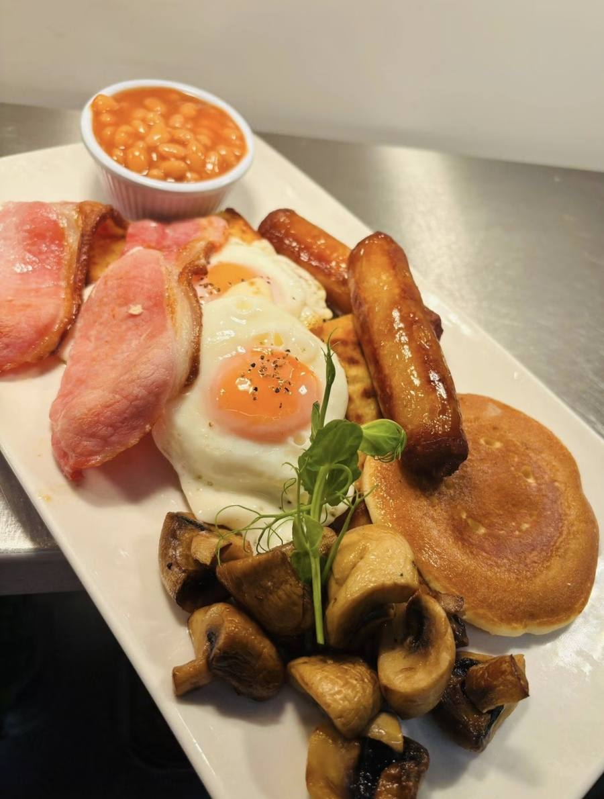
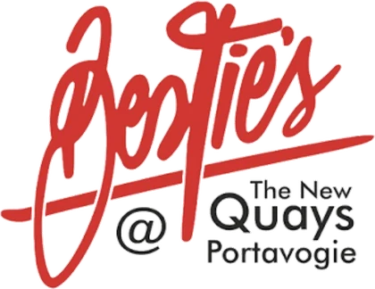
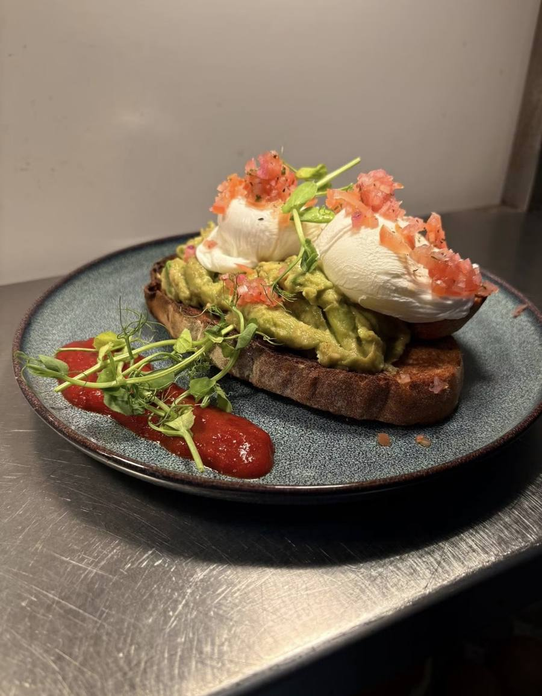
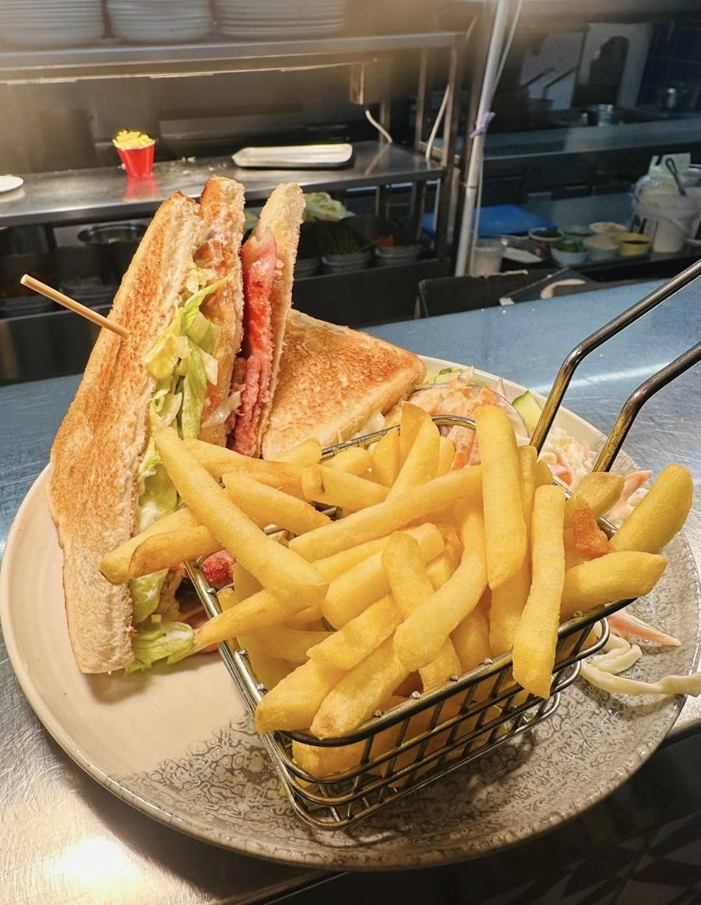
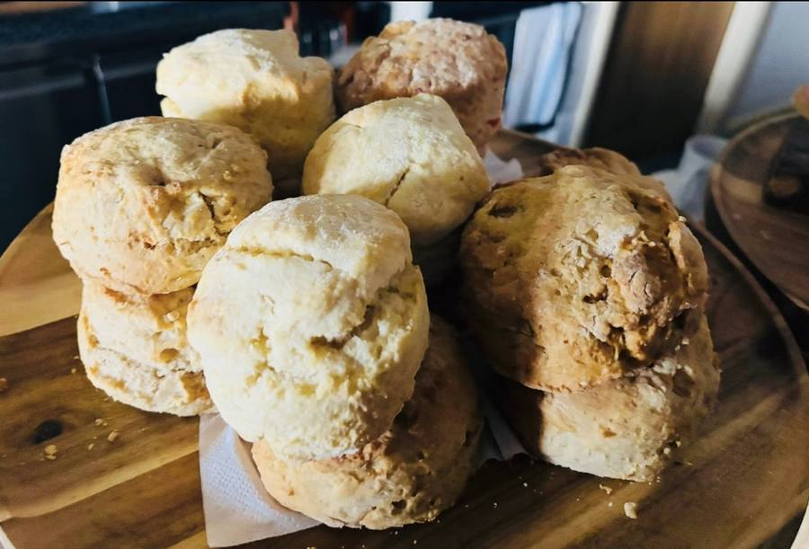
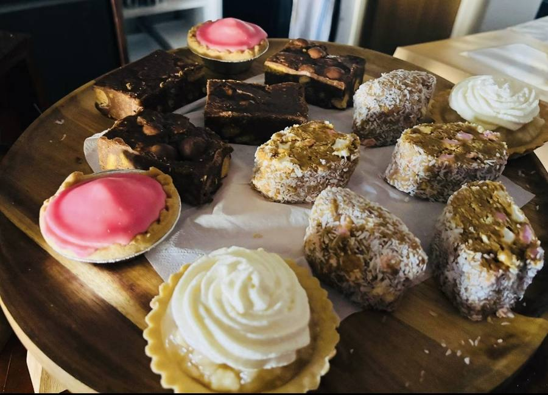

Inside The New Quays
Besties Café
Breakfast, brunch and bakes in its own room, Thursday to Sunday.

Besties is the café side of The New Quays — a separate room in the same building, open through the morning and into the afternoon.
Breakfast, brunch, sandwiches, homemade scones and traybakes, and coffee. Same building, same team, same phone number, different door.
The name is a nod to George Best, whose mural stands just along from Portavogie harbour.
Call 028 4277 2225
What we serve
Morning food, done properly




[Add the Besties menu here, or link to it. Breakfast, brunch, lunch and bakes with prices.]
Opening hours
When Besties is open
| Monday | Closed |
|---|---|
| Tuesday | Closed |
| Wednesday | Closed |
| Thursday | 10am – 3pm |
| Friday | 10am – 3pm |
| Saturday | 10am – 3pm |
| Sunday | 10am – 12pm |
Besties keeps different hours from the restaurant. Both share the same phone number.